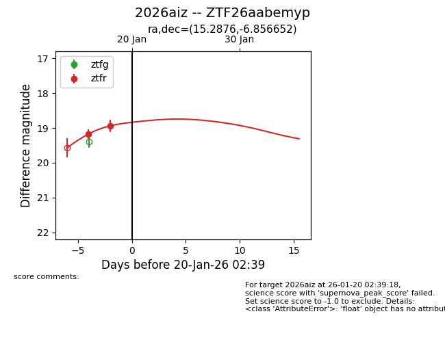
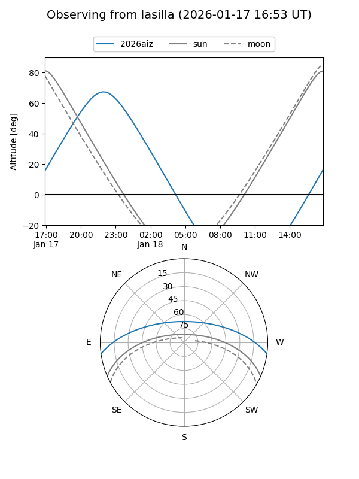
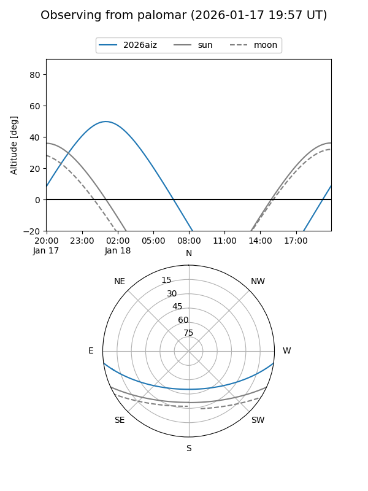
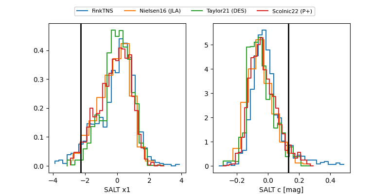

2026aiz
Target 2026aiz at 2026-01-18 02:40
Aliases and brokers:
FINK: link
Lasair: link
ALeRCE: link
TNS: link
YSE: link
alt names
ZTF26aabemyp (ztf,fink_ztf)
2026aiz (tns,yse)
Coordinates:
equatorial (ra, dec) = 15.2876,-6.85665
equatorial (HMS+DMS) = 01:01:09.01,-06:51:23.95
galactic (l, b) = (129.8619,-69.59761)
Flags:
Photometry:
last ztfr=18.94
2 ztfr detections
Lightcurve

Visibility


Additional plots
